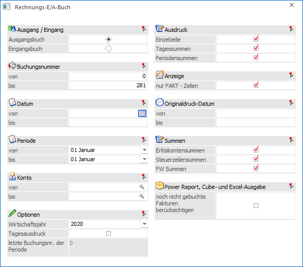
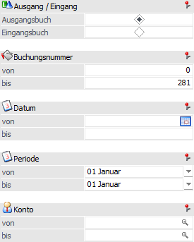
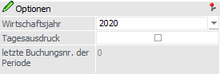
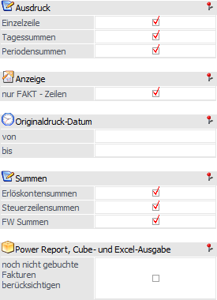
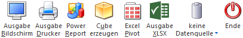
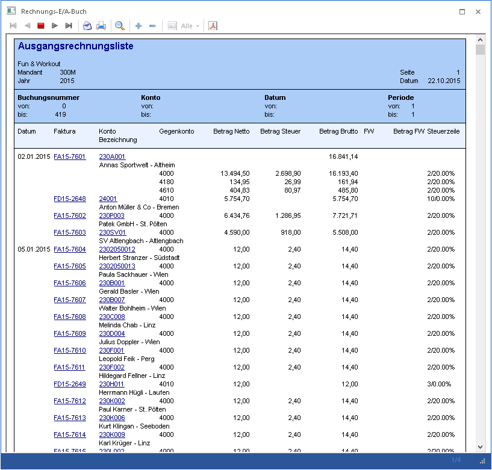

Im Rechnungsausgangsbuch bzw. Rechnungseingangsbuch, welche über den Menüpunkt…
1 WinLine FAKT
1 Auswertungen
1 Rechn. E/A - Buch
… aufgerufen wird, können alle Rechnungen ausgewertet werden.
Achtung
Folgende Voraussetzungen müssen für die Auswertung erfüllt sein bzw. werden.
ü Um die Auswertung am Bildschirm oder auf dem Drucker auszugeben müssen alle Buchungsstapel gebucht worden sein. Dieses kann z.B. in der WinLine FIBU im Menüpunkt "FAKT Stapel" (Buchen - Buchen) oder in der WinLine FAKT im Menüpunkt "Buchungsstapel übernehmen" (Abschluss) durchgeführt werden.
ü Um die Funktion des Rechnungseingangs- bzw. Rechnungsausgangsbuches zu gewährleisten dürfen keine Belege wegreorganisiert werden, bevor der Tagesausdruck erfolgt ist. Grund hierfür ist, dass die WinLine direkt auf diese Belege zugreift.

Für die Ausgabe stehen folgende Selektionen und Einstellungen zur Verfügung:
Selektion

Ø Ausgang / Eingang
An dieser Stelle kann definiert werden, was für eine Auswertung erzeugt werden soll. Folgende Varianten stehen zur Verfügung:
ü Ausgangsbuch
Es wird eine
Aufstellung aller Ausgangsrechnungen gedruckt.
ü Eingangsbuch
Es wird eine
Aufstellung aller Eingangsrechnungen gedruckt.
Ø Buchungsnummer von / bis
Einschränkung der Buchungsnummern, welche ausgewertet werden sollen.
Achtung
Da für das Rechnungsbuch ein eigenes Kennzeichen erforderlich ist, können nur solche Rechnungen ausgewertet werden, welche ab der Version 6.2.9 erfasst wurden.
Ø Datum von / bis
Hier erfolgt die Einschränkung des Datums, das ausgewertet werden soll.
Ø Periode von / bis
Hier erfolgt die Einschränkung der Perioden, die ausgewertet werden sollen.
Ø Konto von / bis
Hier erfolgt die Einschränkung der Konten, welche ausgewertet werden sollen.
Optionen

Ø Wirtschaftsjahr
Aus der Auswahlliste kann ein Wirtschaftsjahr gewählt werden, für welches die Auswertung durchgeführt werden soll. Zusätzlich gibt es die Auswahl "alle Wirtschaftsjahre".
Ø Tagesausdruck
Wird ein Tagesausdruck erstellt, kann dieser nur auf den Drucker durchgeführt werden. Wann der letzte Tagesausdruck durchgeführt wurde, ist am Informationsfeld "letzte Buchungsnummer" ersichtlich. Das Informationsfeld zeigt an, mit welcher Buchungsnummer der letzte Tagesausdruck durchgeführt wurde.
Achtung
Bei Auswahl "alle Wirtschaftsjahre" steht die Option "Tagesausdruck" nicht zur Verfügung!
Einstellungen

Die Einstellungen in den Bereichen "Ausdruck", "Anzeige" und "Summen" werden benutzerspezifisch gespeichert.
Ø Einzelzeile
Hier kann das Druckbild für die Fakturen beeinflusst werden.
ü Option "aktiviert"
Es wird jede
Faktura einzeln aufgelistet
ü Option "deaktiviert"
Es werden
nur die Summen angedruckt.
Ø Tagessummen
Hier kann das Druckbild für die Tagessummenbildung beeinflusst werden.
ü Option "aktiviert"
Für jeden
Tag, an dem Rechnungen gedruckt wurden, wird eine Summe gebildet.
ü Option "deaktiviert"
Es werden
keine Tagessummen gebildet.
Ø Periodensummen
Hier kann das Druckbild für die Periodensummen definiert werden.
ü Option "aktiviert"
Für jede
Periode, für die Rechnungen gedruckt und übernommen wurden, wird eine Summe
gebildet.
ü Option "deaktiviert"
Es werden
keine Periodensummen gebildet.
Ø nur FAKT-Zeilen
Ist diese Option aktiviert, so werden im Rechnungs-Eingangs- / Ausgangs-Buch nur die Fakturen angedruckt, welche von der WinLine FAKT in die WinLine FIBU übergeben wurden. D.h. es werden nur jene Zeilen berücksichtigt welche über die Belegerfassung bzw. den Belegdruck entstanden sind.
Ø Originaldruck-Datum
Bei Aktivierung der Option "nur FAKT-Zeilen" kann an dieser Stelle eine Selektion gemäß dem Datum (inklusive Uhrzeit) des letzten Originaldrucks des Fakturenbelegs erfolgen.
Hinweis:
Wenn eine Faktura gedruckt, storniert und nochmals gedruckt wurde, so wird die ursprüngliche Fakturenzeile nur angezeigt, wenn in den FAKT-Parametern die Option "Kopie des stornierten Belegs erstellen" aktiviert wurde.
Ø Erlöskontensummen
Hier kann für das Druckbild und die Cube-Ausgabe definiert werden, ob Erlöskontensummen ausgegeben werden sollen.
ü Option "aktiviert"
Für jedes
Erlös- bzw. Aufwandskonto wird eine Summe aller dafür erfassten Positionen
angedruckt.
ü Option "deaktiviert"
Es werden
keine Kontensummen angedruckt.
Ø Steuerzeilensummen
Hier kann für das Druckbild und die Cube-Ausgabe definiert werden, ob eine Summierung von Steuerzeilen stattfinden soll.
ü Option "aktiviert"
Für jede
bebuchte Steuerzeile wird eine Summe gebildet.
ü Option "deaktiviert"
Es werden
keine Steuerzeilensummen gebildet.
Ø FW Summen
Hier kann für das Druckbild und die Cube-Ausgabe definiert werden, ob eine Summierung von Fremdwährungszeilen stattfinden soll.
ü Option "aktiviert"
Für jede
verwendete Fremdwährung wird eine Summe gebildet.
ü Option "deaktiviert"
Es werden
keine FW-Summen gebildet.
Ø Power Report, Cube- und Excelausgabe - noch nicht gebuchte Fakturen berücksichtigen
Durch Aktivieren dieser Option werden bei den Auswertemöglichkeiten "Power Report", "Cube erzeugen", "Excel Pivot" und "Ausgabe XLSX" zusätzlich, zu den bereits gebuchten Fakturen, auch die Buchungen aus den FAKT-Stapeln (Standard "-1 bis -12") berücksichtigt. In der Auswertung selbst steht dieser Wert in einer eigenen Dimension ("Status", die den Wert "gebucht" oder "noch nicht gebucht" enthält) zur Verfügung.
Hinweis
Für die Buchungen aus den Stapeln (d.h. noch nicht gebucht) wird eine getätigte Einschränkung nach Buchungsnummer nicht berücksichtigt.
Buttons

Ø Ausgabe Bildschirm
Mit Hilfe des Buttons "Ausgabe Bildschirm" oder der Taste F5 wird die Auswertung am Bildschirm ausgegeben.
Ø Ausgabe Drucker
Durch Anwahl des Buttons "Ausgabe Drucker" wird die Auswertung am Drucker ausgegeben.
Ø Power Report
Durch Drücken des Buttons "Power Report" wird die Auswertung auf Basis von Cube-Daten grafisch dargestellt. Die Ausgabe ist individuell anpassbar und erfolgt in der Form von "Widgets", die unterschiedlichsten Darstellungen ermöglichen.
Ø Cube erzeugen
Wenn die Option "Cube erzeugen" gewählt wird (nur möglich, wenn auch die entsprechende Lizenz dafür vorhanden ist), dann wird die Auswertung im "Olap Viewer" angezeigt. In diesem können die Daten nach verschiedenen Gesichtspunkten ausgewertet werden.
Ø Excel Pivot
Durch Anwahl des Buttons "Excel Pivot" werden die selektierten Zeilen in Form einer Pivot Ausgabe in Microsoft Excel (2007 oder höher) angezeigt.
Ø Ausgabe XLSX
Mit Hilfe des Buttons "Ausgabe XLSX" wird die Auswertung mit den von Ihnen definierten Selektionen an Microsoft Excel übergeben.
Ø Datenquelle
Mit Hilfe dieser Auswahl kann definiert werden, ob und wie eine Datenquelle (d.h. ein Snapshot oder eine MasterView) verwendet werden soll.
ü Keine Datenquelle
Bei Auswahl
von "keine Datenquelle" wird keine zuvor angelegte Datenquelle genutzt. D.h. die
Daten werden von der WinLine "live" ermittelt und in der gewünschten Form
ausgegeben.
Hinweis
Da die BI-Ausgabe (z.B. Cube oder Power Report) immer eine Datenquelle benötigt, wird im Hintergrund eine temporäre Datenquelle (Snapshot) gebildet.
ü Datenquelle
erstellen/aktualisieren
Die Daten werden zur Laufzeit ermittelt und an einen
zu definierenden Snapshot übergeben. Nach dem Füllen der Datenquelle wird die
gewünschte Ausgabevariante über die Datenquelle erzeugt. Dieser Vorgang kann mit
einer Zeitverzögerung verbunden sein, da die Daten zusätzlich gespeichert werden
müssen.
ü Datenquelle verwenden
Bei der
Verwendung eines Snapshots werden die Daten direkt aus der Datenquelle gelesen,
d.h. die für die Ausgabe benötigten Daten können ohne Verzögerung in der
gewünschten Variante ausgegeben werden.
Wird hingegen eine MasterView
gewählt, so werden die Daten für die Ausgabe "live" ermittelt, wobei diese so
aktuell sind wie die zugrunde liegenden Datenquellen.
Hinweis
Der Button "Datenquelle verwenden" wird nur angeboten, wenn für diesen Bereich (bezogen auf den aktuellen Benutzer / Mandanten) zumindest eine private oder öffentliche Datenquelle existiert. Des Weiteren stehen die Ausgabevarianten "Ausgabe Bildschirm" und "Ausgabe Drucker" nicht zur Verfügung.
Hinweis
Weitere Informationen zum Thema "Datenquellen" entnehmen Sie bitte dem Kapitel "Die Datenquelle".
Ø Ende
Durch Drücken des Buttons "Ende" bzw. der Taste ESC wird das Fenster geschlossen.

Am Ausdruck wird die Anzahl der Fakturen und der Gutschriften unterhalb der Summe in einer eigenen Zeile angezeigt, da es sich hier um die Anzahl der Buchungen mit positiven bzw. negativen Gesamtbetrag handelt. Die Anzahl der gutgeschriebenen Positionen (Einzelpositionen mit negativem Betrag) wird direkt unterhalb der Gesamtsumme angedruckt.
Beispiel
DF mit Splitbuchung,
+300 auf Konto 4000,
-200 auf Konto 4001,
ergibt in Summe 100.
Als gutgeschriebene Position wird am Ausdruck der Betrag von 200 angeführt.